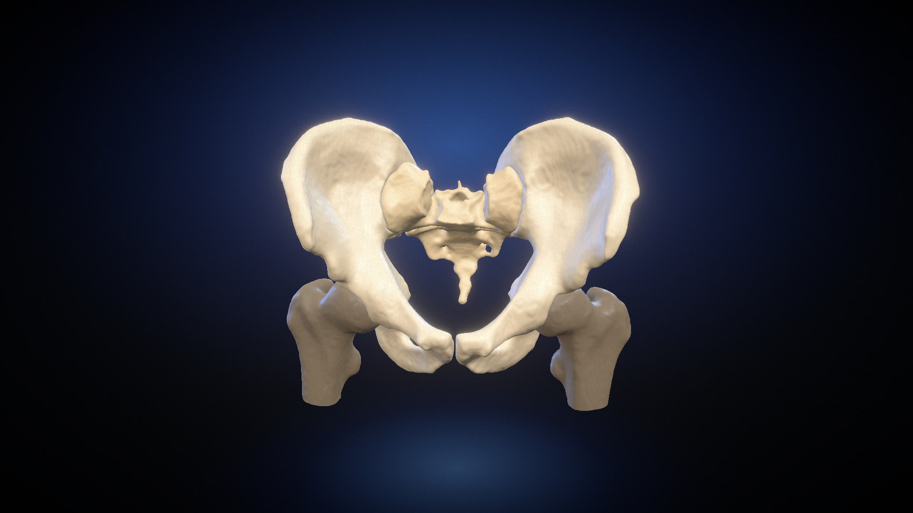
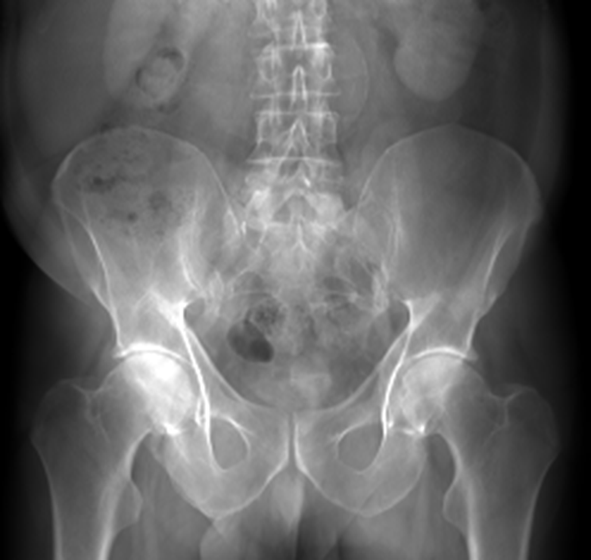
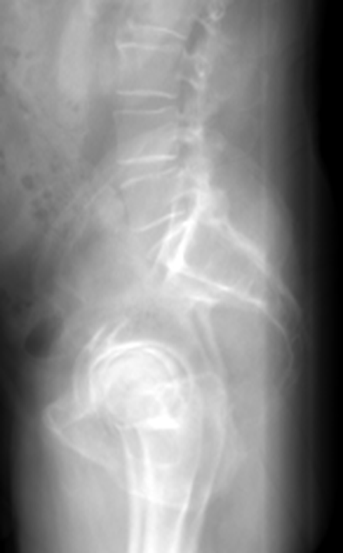
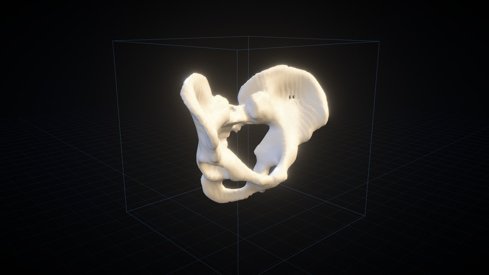
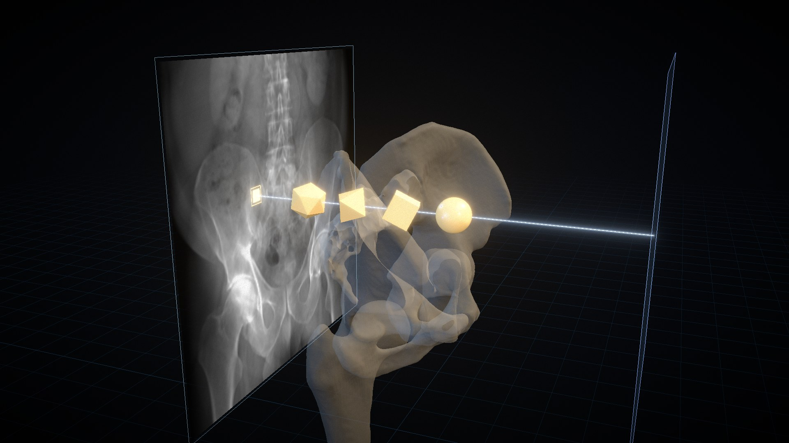
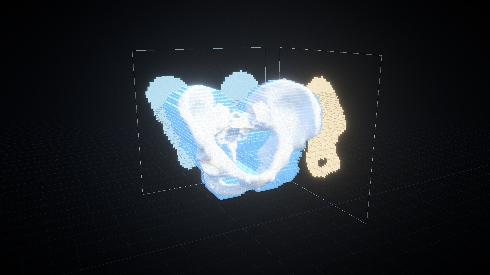
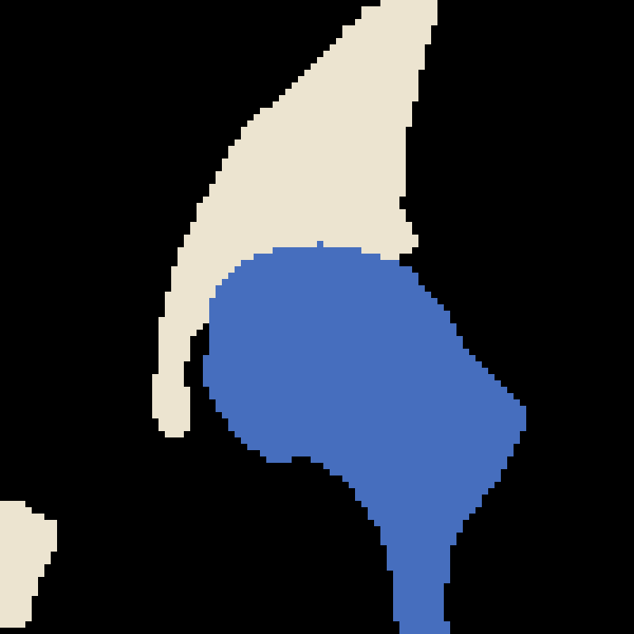
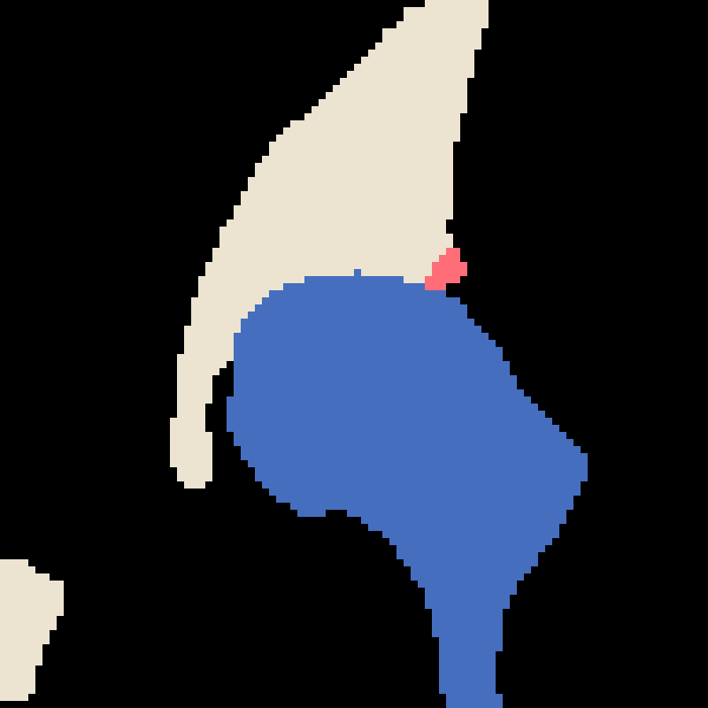

Two X-rays
→ a 3D pelvis
Learning the 3D shape of a bone from one front and one side radiograph, and measuring how well it holds up on real X-rays.
Given an AP and a lateral X-ray, how well can a learned model recover the bone in 3D?

AP
LAT
3D occupancy · 64³Both X-rays here are simulated from a real CT scan (subject s1390, TotalSegmentator), so the true 3D answer is known.
Project 7 goes from a CT volume to a surface. We go the other way.
3D is already given
CT volume → 2D U-Net segments each slice → marching cubes → surface. The network only labels voxels that are already there.
3D must be recovered
Two projections → network → 3D bone. Weeks 9–12 of the course in one pipeline: camera geometry, perspective projection, voxels and meshes.
A CT scanner solves this with hundreds of projections. We have two.
An X-ray is a sum along each ray. Depth is gone.

- Every pixel stores one number per ray: the total attenuation μ along it.
- Very different 3D shapes can produce the same pixel.
- Even with two views there is no unique answer. It is an ill-posed inverse problem.
Geometry alone gets Dice 0.37 from two views. A shape prior is needed.

visual hull vs true pelvisVisual hull = intersect the back-projected silhouettes. Curve: hero pelvis s1390; 2-view hull over all 27 clean subjects: Dice 0.38 ± 0.02. Dashed line: mean over the same 27 (leave-one-out). 64³ grid, 5.5 mm cells.
Open CT for training, real fluoroscopy for the final test.
TotalSegmentator · CC BY 4.0
1,228 CT scans with 117 labelled structures, including hips and sacrum. Used for training and simulated testing.
DeepFluoro · CC BY-NC-ND
6 cadavers with real fluoroscopy and a matching CT. Used only for the final sim-to-real test.
Our screen of the 102-scan subset
Filter before splitting, split by patient, and run the same filter on the full 1,228 on Kaggle.
We render our own X-rays from CT: DRRs.

- Convert CT numbers (HU) to attenuation, then sum along each ray.
- Same pinhole-camera model as weeks 9–10, but the object is semi-transparent.
- NumPy version first (parallel beams), then DiffDRR: perspective and differentiable.
- Unlimited AP + LAT pairs with perfect 3D ground truth.
Five stages, one non-neural baseline.
Baseline: retrieve the training pelvis whose DRRs look most like the input, and score it with the same metrics.
A 2D-encoder / 3D-decoder U-Net that predicts bone occupancy.
- Input: AP and LAT DRRs. Each view is encoded by 2D convolutions.
- Lift: features from both views are combined and expanded into a 3D grid.
- Output: 64 × 64 × 64 probabilities of “bone here”.
- Loss: Dice + cross-entropy. A plain regression model, no GAN, so it can't invent anatomy.
- Budget: 3,000–5,000 iterations on a free T4 GPU (Colab / Kaggle).
Design follows the open biplanar bone-shape benchmark of Shakya & Khanal (NeurIPS 2023 Datasets & Benchmarks).
The bar to beat: copy the most similar pelvis.
Mean over the 27 clean subjects, leave-one-out; nearest neighbour = L2 distance between 32×32 AP+LAT line-integral images. 64³ grid, 5.5 mm cells. Published value: Shakya & Khanal 2023 (best pelvis Dice 85.8).
Change one thing at a time.
One view vs two views
AP only vs AP + LAT. Same architecture, same iterations, same split, same seeds. 2–3 seeds per arm, so the difference comes with a spread.
How much does the second X-ray actually buy?
Robustness or data size
Tilt the lateral view to 91–100° (real X-rays are never perfectly orthogonal), or train on 100 vs 400 volumes.
How fragile is it, and is more data the cheapest win?
The split is fixed in week 1, by patient, and never changed.
Dice can be near-perfect while the clinical angle is wrong.

true · CE 41°
rim shaved · CE 30°So we report Dice, HD95, ASSD, Chamfer and NSD plus one clinical angle, and check whether they agree.
Hero pelvis s1390. Simplified CE angle in one coronal slice through the femoral-head centre. Coronal slice shown; red = removed rim.
A measured sim-to-real gap, not “looks plausible”.
Key papers (X2CT-GAN, PerX2CT) evaluate real radiographs only qualitatively: no paired ground truth. DeepFluoro has real fluoroscopy and CT, so we can put a number on the gap.
None of the papers we read report a nearest-neighbour baseline. We report it next to the network.
Test the published claim that better Dice doesn't always mean better clinical parameters, on our own models.
Why the gap matters: on vertebrae, a 2025 study measured 29.45 dB on simulated vs 23.22 dB on real X-rays (IXGS, Sci. Rep.). "Not found" = from a systematic search, not proof of absence.
What could go wrong, and the plan for each.
| Risk | Mitigation |
|---|---|
| Few usable pelvises | 27 of 102 in the subset. Screen the full 1,228 on Kaggle; augmentation; fall back to VerSe vertebrae if needed. |
| C-arm geometry ≠ AP/LAT | Render training DRRs with DeepFluoro's camera intrinsics and poses; score only the visible field; report what's left as part of the gap. |
| Label noise | TotalSegmentator masks are partly model-generated. Inspect the 10 worst cases: label error or model error? |
| Invented anatomy | No GAN. Re-project the prediction with DiffDRR and compare it to the input silhouette. |
| Free GPU limits | Runs under 4 hours, checkpoints to Drive; Colab for debugging, Kaggle for long runs. |
Eight weeks, each of us owns a deliverable every week.
- Problem: 3D bone from two X-rays, an ill-posed inverse problem.
- Method: a 2D→3D U-Net that learns the pelvis shape prior.
- Bar to beat: nearest neighbour, Dice 0.57 (measured).
- New: a measured gap on real fluoroscopy.